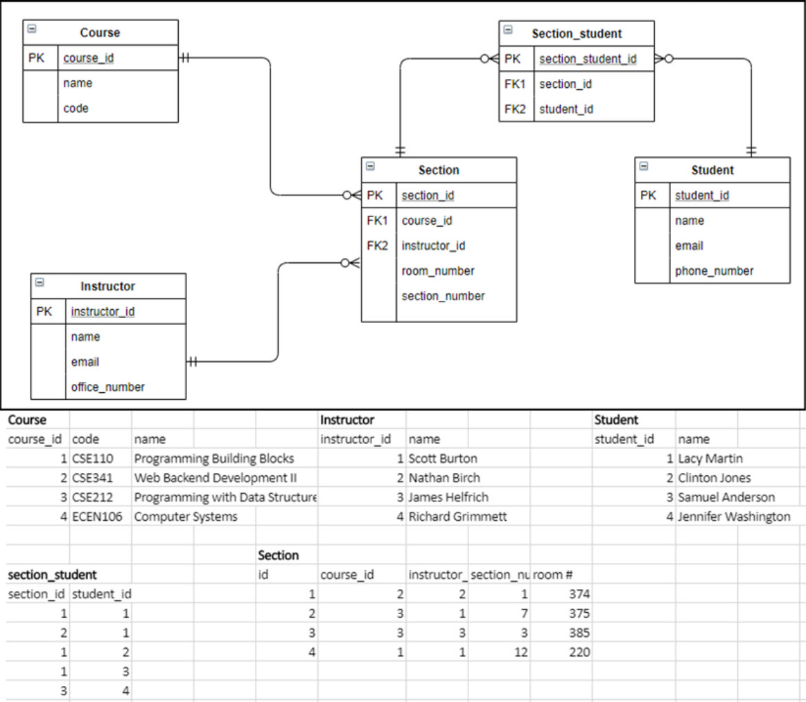
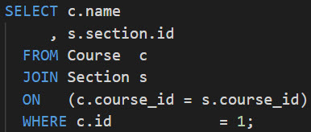
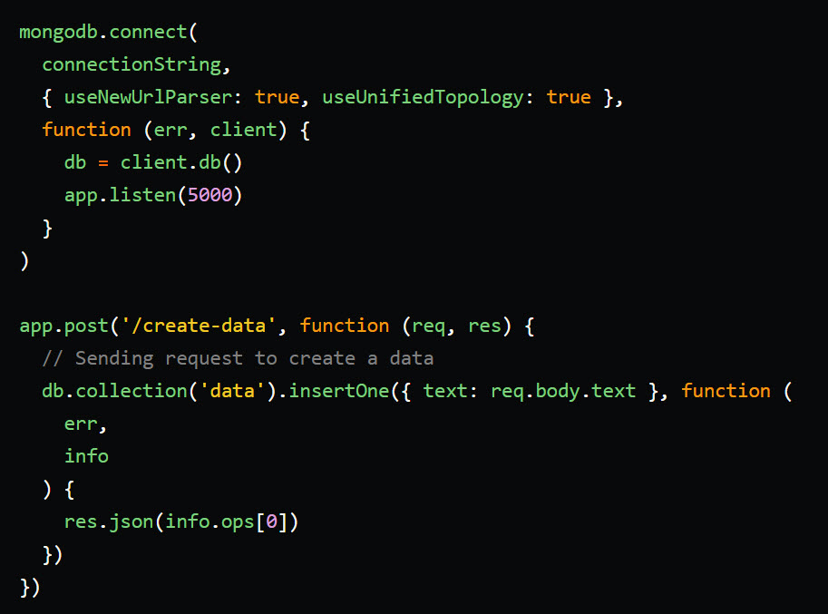
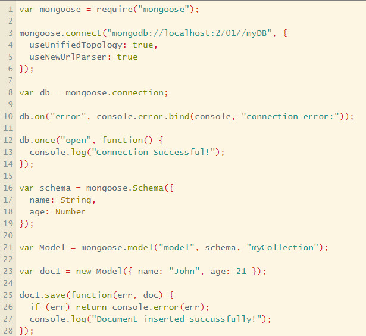

Lesson 4 Instructor Guide
Administrative Notes
Post an announcement for your students this week in Teams.
If your section of CSE341 is planning on doing projects with WDD 330 students, this is the week to put them into their groups. You can invite them to your Microsoft Teams space, go to their class space, or create a new space altogether. But these students should be put into groups this week and start thinking about what project they are going to work on for the second half of the semester.
Teaching Notes
Important topics to teach your students this week. These topics will come primarily from the reading and should contain information that will help them with their assignments.
Databases
From the Oracle website we read
A database is an organized collection of structured information, or data, typically stored electronically in a computer system. A database is usually controlled by a database management system (DBMS). Together, the data and the DBMS, along with the applications that are associated with them, are referred to as a database system, often shortened to just database.
Data within the most common types of databases in operation today is typically modeled in rows and columns in a series of tables to make processing and data querying efficient. The data can then be easily accessed, managed, modified, updated, controlled, and organized.
There are many different types of databases. The most commonly used are SQL (or relational) and NoSQL.
The Oracle website goes on to describe the difference between a database and a spreadsheet:
Databases and spreadsheets (such as Microsoft Excel) are both convenient ways to store information. The primary differences between the two are:
How the data is stored and manipulated
Who can access the data
How much data can be stored
Spreadsheets were originally designed for one user, and their characteristics reflect that. They’re great for a single user or small number of users who don’t need to do a lot of incredibly complicated data manipulation. Databases, on the other hand, are designed to hold much larger collections of organized information—massive amounts, sometimes. Databases allow multiple users at the same time to quickly and securely access and query the data using highly complex logic and language.
SQL
SQL is short for Structured Query Language. Again, from the Oracle website:
SQL is a programming language used by nearly all relational databases to query, manipulate, and define data, and to provide access control. SQL was first developed at IBM in the 1970s with Oracle as a major contributor, which led to implementation of the SQL ANSI standard, SQL has spurred many extensions from companies such as IBM, Oracle, and Microsoft. Although SQL is still widely used today, new programming languages are beginning to appear.
There are many different relational databases that use SQL. Here are some of the more widely used ones:
MySQL
OracleDB
SQLite
PostgreSQL
AWS RDS
MS SQL Server
AWS Aurora
MariaDB
Google Cloud SQL
SAP SQL Anywhere
Database Visual Example
The following example may help to visualize how data is stored in a relational database architecture:
From this, we can see how primary keys work with foreign keys. We can see what needs to be done with a many to many relationship like we see with the section and student database entities. Crows Foot Notation is frequently used in Entity Relationship Diagrams like the one listed above to depict the relationship between database entities.
Database Code Example
Now that we've seen a visual example of what the data in a SQL database will look like, let's look at some code in SQL to see how we can interact with this data. Each of the SQL database systems listed above has slightly unique syntax in their implementation of SQL. They are all similar, but have slightly different syntax rules. The following examples are in PostgreSQL.
SELECT name FROM Student;- This prints/retrieves the name from the Student table.SELECT id, name FROM Student;- This prints/retrieves the id and name from the Student table.SELECT * FROM Student WHERE name = 'Lacy';- This prints/retrieves the every column of data from the Student table where the row name is equal to "Lacy".
This example does a lot of things. It retrieves data from two tables, and finds where the data is similar by isolating the course_id in each table. This is possible because of the unique values stored as primary key in the course table. Then when the section table references a specific course, it uses a foreign key to access that unique piece of data. This query then prints/selects the name of the course, and the section id. This may be useful for isolating a course in I-learn. This same principle of JOINs can be used to access data across many tables and allow you to retrieve the data that you need for a given task.
NoSQL
Description
From the MongoDB website we read:
NoSQL databases (aka "not only SQL") are non tabular, and store data differently than relational tables. NoSQL databases come in a variety of types based on their data model. The main types are document, key-value, wide-column, and graph. They provide flexible schemas and scale easily with large amounts of data and high user loads.
When people use the term “NoSQL database”, they typically use it to refer to any non-relational database. Some say the term “NoSQL” stands for “non SQL” while others say it stands for “not only SQL.” Either way, most agree that NoSQL databases are databases that store data in a format other than relational tables.
A common misconception is that NoSQL databases or non-relational databases don’t store relationship data well. NoSQL databases can store relationship data—they just store it differently than relational databases do. In fact, when compared with SQL databases, many find modeling relationship data in NoSQL databases to be easier than in SQL databases, because related data doesn’t have to be split between tables.
NoSQL data models allow related data to be nested within a single data structure.
NoSQL databases emerged in the late 2000s as the cost of storage dramatically decreased. Gone were the days of needing to create a complex, difficult-to-manage data model simply for the purposes of reducing data duplication. Developers (rather than storage) were becoming the primary cost of software development, so NoSQL databases optimized for developer productivity.
There are many different NoSQL databases. Here are some of the more widely used ones:
MongoDB
Firebase
Cassandra
Elasticsearch
Couchbase
Oracle NoSQL
Neo4j
HBase
Memcached
CouchDB
Redis
As you can imagine, these all have their advantages and disadvantages. They are not listed in any order. As you begin work on any project, you should look into what your database needs will be, and then use that knowledge to decide what database architecture you should implement whether it be SQL or NoSQL.
Database Visual Example
For this example, we will look at a MongoDB database implementation. The program running in this image is called MongoDB Compass and is simply a GUI for managing MongoDB.

Here, you can see that all data is stored in a single document. Working with Node.js and JavaScript, this looks a lot like a JavaScript object or a json document. Because of this, it is extremely simple to retrieve and modify data in MongoDB.
Database Code Example
Now, let's look at a simple example of how to save data in MongoDB from Node.js. In this class, we will use Mongoose along with MongoDB to help add a bit of structure to our databases. Here is a tutorial on how to get started with Mongoose. The snippet of code below shows how we would save data in MongoDB using Mongoose.
Database Architecture Comparison
When to use SQL
You’re working with complex queries and reports
You have a high transaction application
You must ensure ACID compliance
You don’t anticipate a lot of changes or growth
When to use NoSQL
When you need to store large volumes of data that might have little to no structure.
When you need to make the most of cloud computing and storage.
When you need speedy development.
To boost horizontal scalability (Application Growth).
Class Activity
To help students gain experience working in Databases, here is a class activity. This will help them learn how to create a MongoDB cluster and connect it to a Node project.The following zip file can be distributed to your students. It has tasks in it instructing them regarding what they should do. This can be done in a class setting as a group, in teams, or individually.
Lesson 4 Class Activity zip to share with students
There isn't any solution zip for this week because they didn't really have to write any code. Instead, simply help the students understand the different aspects of the zip file provided. And help them with bugs as they try to set up a MongoDB cluster and save data from the Node project in the database. The one field that has restrictions is the is_deleted field. These needs to be an integer. Everything else should be able to save just fine, and they should be able to view the saved data in their database.
Instructor Preparation
This week is all about databases. The majority of what they will need to be successful will be in the Academind course. Encourage the students to spend the time on these videos to be able to understand the information in them.
Make sure students know that their prove assignment for this week is part of their e-commerce project. If they simply follow along with the Academind course, they will have pretty much all the code they will need to submit their assignment for this week. Remind them that to get full credit, they need to go above and beyond the requirements, and add some sort of functionality or styling to make it their own and add value to their projects.
Remember that even though we're talking about relational databases in this lesson, the students are going to use MongoDB all semester and not use SQL at all. We teach them briefly about both to give them a little bit of understanding regarding their options. With that said, CSE341 uses NoSQL because CSE340 uses SQL. This curriculum was designed to compliment the other so that students can get ample experience in both if they'd like.